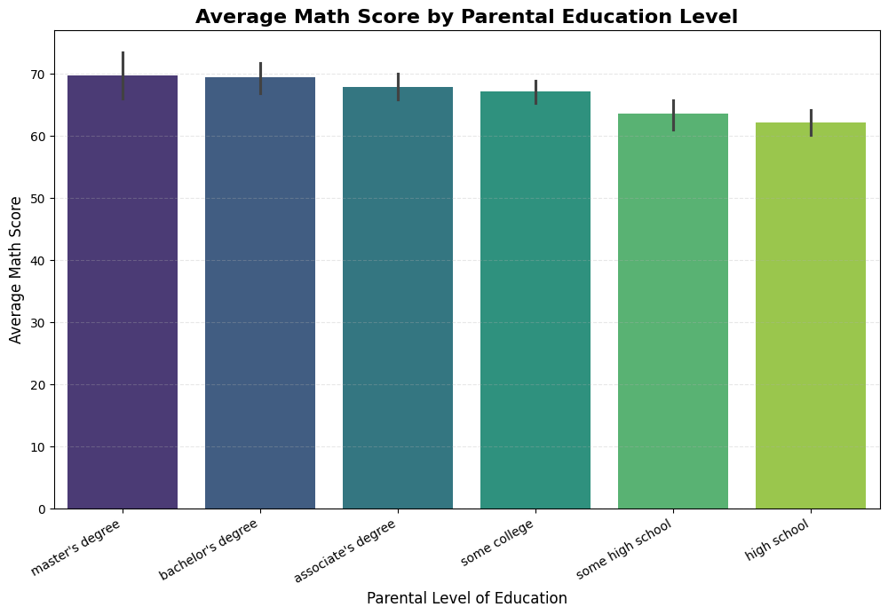
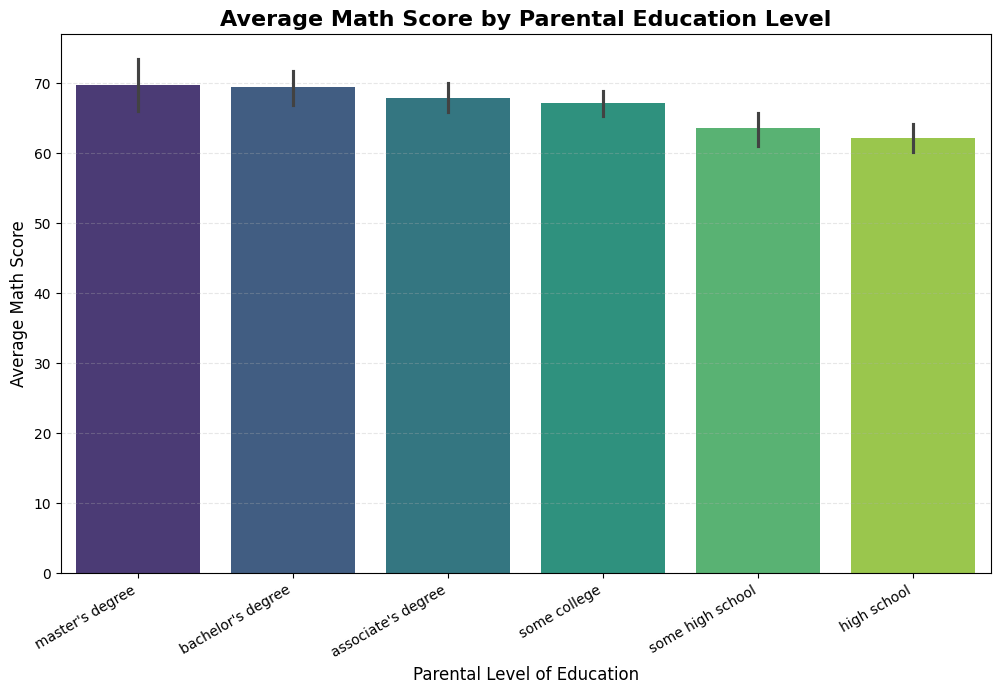
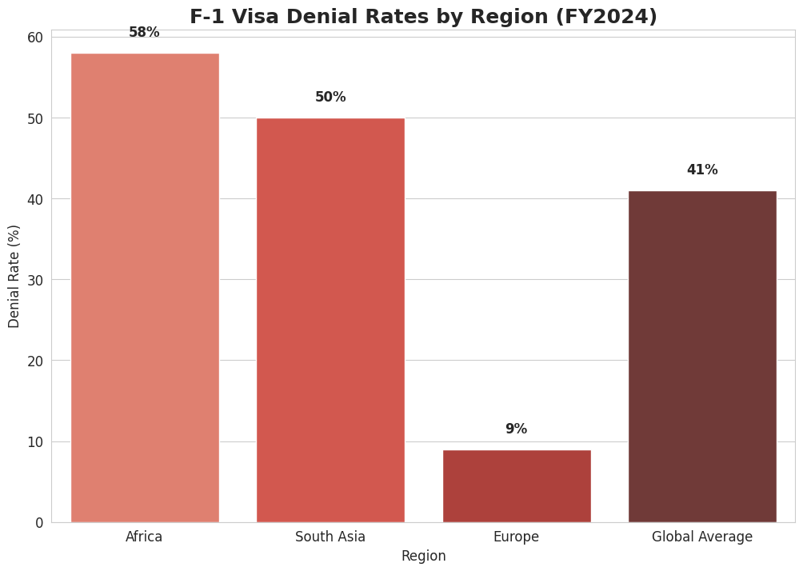
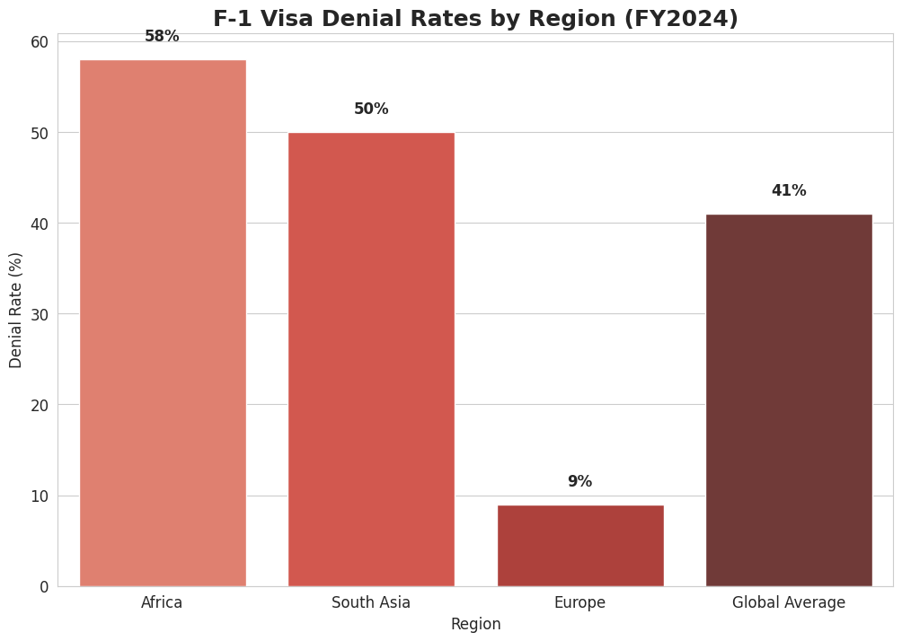
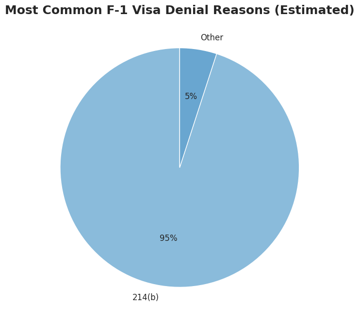
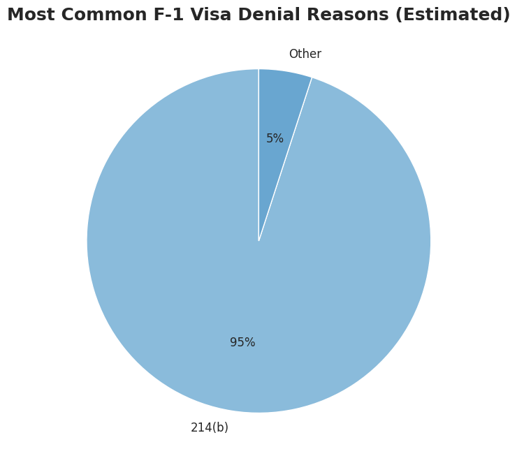

Real-Time Analytics Dashboard
Built an interactive web dashboard to track key metrics using Plotly Dash. Features dynamic filtering, real-time updates, and customizable visualizations for business decision-making.
 



Student Performance Insights
Analyzed 1,000+ student exam records using Python and Seaborn. Key discovery: Completing test preparation boosts math scores by 14.1 points on average. Also uncovered strong links between parental education and performance.

Security Operations Dashboard (SOC Lab)
Designed a real-time threat detection dashboard using Splunk SIEM concepts in a home lab environment. Monitored logs, identified anomalies, and visualized attack patterns.
 

 
